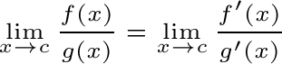

L'Hôpital's rule is a way to evaluate limits of indeterminate forms.
Indeterminate Forms:
- Type 1: ∞/∞ or 0/0
- Type 2: ∞ - ∞ or 0 * ∞
- Type 3: 00, 1∞, or ∞∞
If you have an indeterminate of type 1, L'Hôpital's rule can be applied. For indeterminates of other forms, convert them to type one first.
